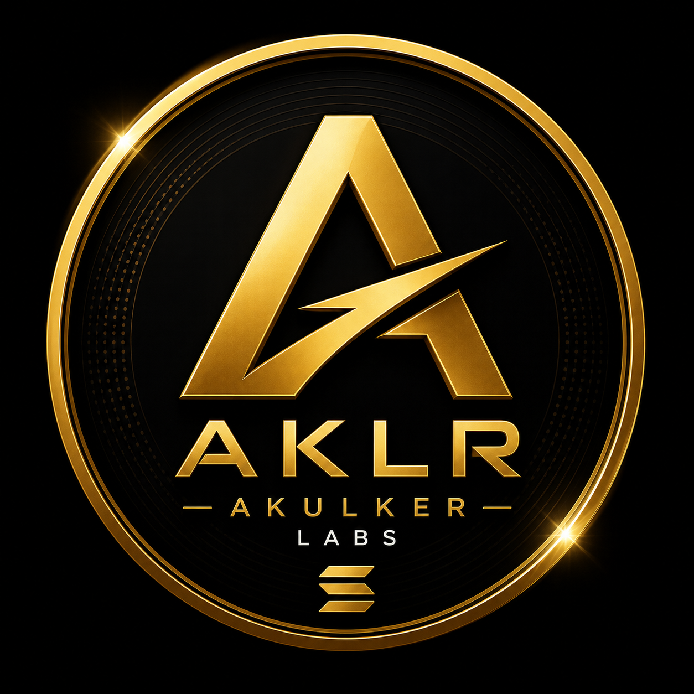

⚡
Hızlı işlemler
Solana altyapısı sayesinde işlemler saniyeler içinde ve düşük ağ maliyetiyle gerçekleşir.

AKLR Akulker Labs AKLR AlAKLR; Solana'nın hızlı ve düşük maliyetli altyapısı üzerinde oluşturulmuş, sabit arzlı ve zincir üzerinde doğrulanabilir bir dijital varlıktır.
CyLBbS7E89Tq4BqkfjYBhm1u71s6aM5W9CWZtavqHjCK
AKLR'nin temel yapısı açık, anlaşılır ve Solana blokzinciri üzerinde doğrulanabilir.
Solana altyapısı sayesinde işlemler saniyeler içinde ve düşük ağ maliyetiyle gerçekleşir.
Mint Authority kaldırılmıştır. Yeni AKLR üretilemez ve toplam arz artırılamaz.
AKLR, Raydium üzerindeki likidite havuzu aracılığıyla serbestçe takas edilebilir.
AKLR Solana üzerinde oluşturuldu, metadata ve temel token bilgileri tanımlandı.
Raydium likiditesi açıldı; mint ve freeze yetkileri kalıcı olarak kaldırıldı.
Web sitesi, sosyal kanallar ve token takip platformlarındaki görünürlük geliştiriliyor.
Organik topluluk büyümesi, yeni iş birlikleri ve uzun vadeli proje geliştirme.
Benzer isimli sahte tokenlardan korunmak için işlem yapmadan önce resmî mint adresini kontrol et.
Kripto varlıklar yüksek risk taşır. Bu web sitesi yatırım tavsiyesi sunmaz. Kendi araştırmanızı yapın ve kaybetmeyi göze alamayacağınız tutarlarla işlem yapmayın.